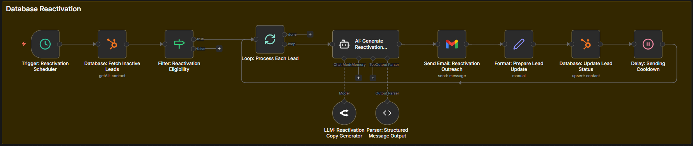

Database Reactivation System
Turn your old leads into new revenue — without spending on ads.

The Problem
Most businesses sit on hundreds or thousands of leads they never follow up with again.
- Old leads are forgotten after initial contact
- Past customers are never re-engaged
- Huge revenue is left unused inside the CRM
These are not cold leads — they already showed interest.
Why This Matters
Getting a new lead costs money.
Reactivating an old lead costs almost nothing — and converts faster.
Your database is a hidden goldmine that most businesses ignore.
How The System Works
- Pulls contacts from your CRM or database
- Segments them based on behavior (inactive, past buyers, no-shows, etc.)
- Sends personalized re-engagement messages
- Messages go via Email / WhatsApp / SMS
- Smart logic adjusts based on replies
- Interested leads are qualified automatically
- Warm leads are sent directly to your sales team
Who This Is For
- Gyms & fitness businesses
- Dental & healthcare clinics
- SaaS platforms
- E-commerce brands
- Coaches & consultants
Any business with 500+ contacts in their database can benefit immediately.
Business Impact
Even small reactivation rates create massive revenue.
- 2–3% reactivation = huge revenue boost
- No additional ad spend required
- Faster conversions than cold leads
- Higher ROI from existing data
Example: 4,000 dormant leads → 2% conversion = 80 customers
This can generate $30,000+ revenue instantly.
Some businesses see up to 1,200% ROI within 60 days.
Book This System →